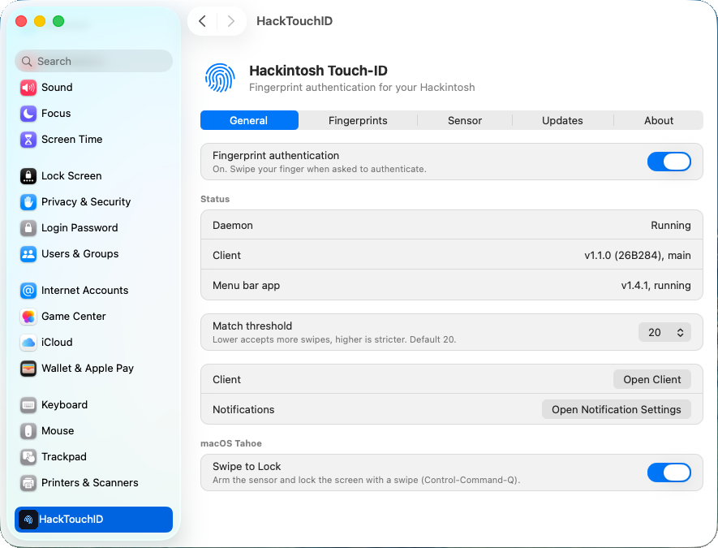
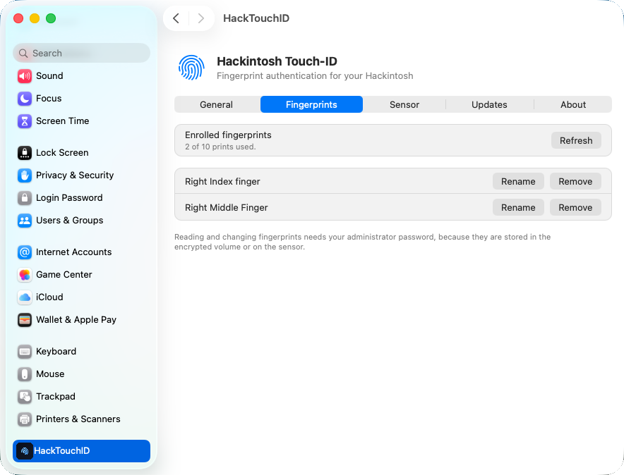
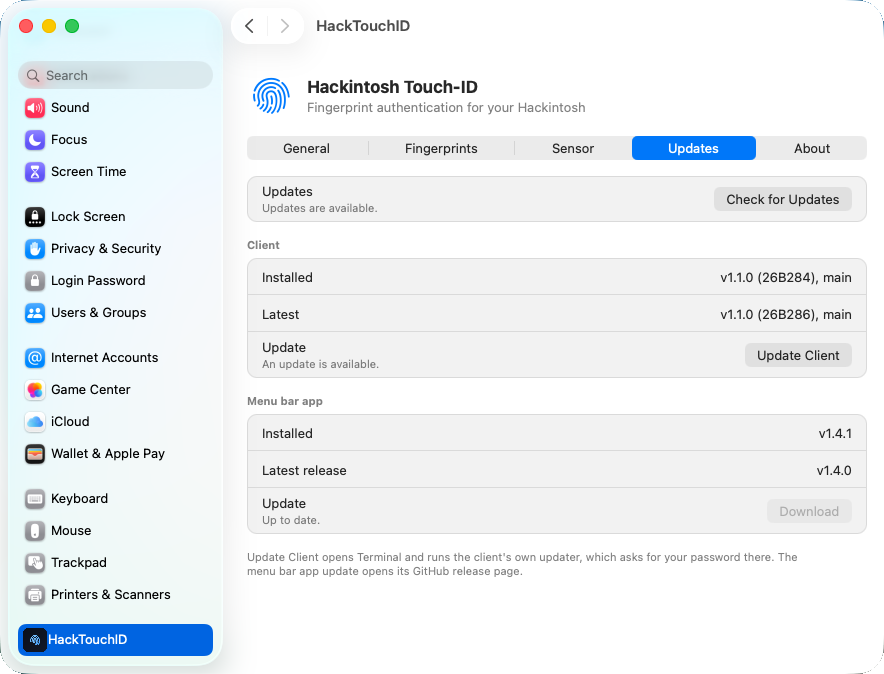

What is it?
HTID is a fingerprint authentication daemon for macOS on Hackintosh hardware. It ports the USB capture protocol of supported fingerprint sensors to native C, matches swipes with NIST's NBIS suite, and types your password into the macOS prompt when your finger matches. It is not a kernel extension and not a libfprint port.
Built for laptops that shipped with a fingerprint sensor but have no native macOS driver.
Releases
Next release: v1.1.0
Already on the main branch. It will be released once the Prometheus 97 sensor runs perfectly, so there is no date yet. Supports the Validity VFS5011 and the Synaptics Metallica MIS. See the changelog.
Fpbootd: pre-login auth
Experimental work on fingerprint authentication before login. Early stage, not usable yet.
Features
06cb:009a.Settings pane
HTID adds its own pane to System Settings, so you can manage fingerprints without the terminal. Install it from the client menu with [I] Install Preference Pane (System Settings). It also has Sensor and About tabs.



Supported macOS
| Version | Status |
|---|---|
| macOS 15 Sequoia and later | Recommended |
| macOS 14 Sonoma | Supported (minimum) |
| macOS 13 Ventura and older | No support. It may work, but you are on your own. |
OpenCore v1.0.6 or later is required for support. Release or Debug builds are both fine. Older versions may work but are not supported.
Supported sensors
| Sensor | VID:PID | Status |
|---|---|---|
| Validity VFS5011 | 138A:0018 | Supported, confirmed working |
| Synaptics Metallica MIS | 06cb:009a | Supported, confirmed working (ThinkPad X1C6) |
| Prometheus 97 | 138A:0097 | Developing and actively testing |
| Prometheus 9d | 138A:009d | Developing, should work according to python-validity |
| UPEK TouchStrip | 147E:2016 | Developing & actively testing |
This is a hobby project, so keep expectations in check. The client checks your sensor's VID:PID and tells you whether it is supported.
Credits
@Hackintosh-user, lead developer. @ilikehackintosh, documentation. Thanks to u/p0cketl1nt (Metallica MIS and Prometheus 97 testing) and u/dCold_Salamander7764 (UPEK TouchStrip testing).